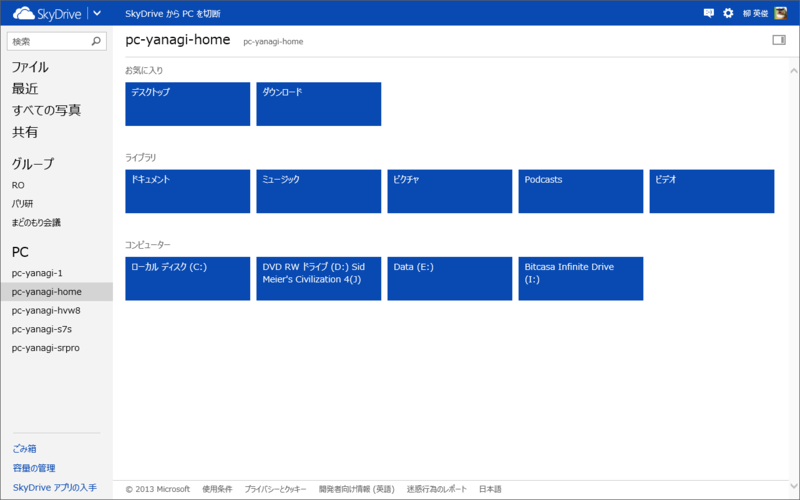
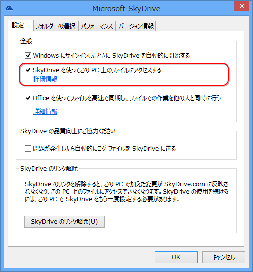

SkyDrive のリモートアクセス機能
公開日：

Windows 用の SkyDrive デスクトップ アプリが PC にインストールされている場合は、ファイルの取得機能を使って、SkyDrive.com で別のコンピューターからその PC 上のすべてのファイルにアクセスできます。PC のファイルをリモートで参照すると、ファイルのコピーをダウンロードして操作できます。
SkyDrive にはブラウザーから PC のファイルへアクセスできる機能があって、これがたまに便利。この機能を利用するためには、
- アクセス先の PC の電源がオンになっていて、インターネットに接続されている
- アクセス先の PC で SkyDrive が実行されていて、ファイルの取得設定が有効になっている
この2つが条件。

ファイルの取得設定っていうのは、この“SkyDrive を使ってこの PC 上のファイルにアクセスする”っていうオプションね。
しかしこの機能、どうも Windows 8.1 の SkyDrive では使えなくなるみたい。少なくとも、設定を有効化するユーザーインターフェースはみつからなかった。
記事には書かなかったけど、 Windows 8.1 って SkyDrive のリモートアクセス対象にできなくない？ 調査不足かなぁと思ってたんだけど、信頼済みにしてもダメなんだよね
@daruyanagi やはりそうかー、リモート無いの痛い……(´･ω･`)
2013-08-01 21:12:20 via twicca to @daruyanagi
復活を希望したいけれど、この機能ってもともと Windows Live Mesh 由来の機能だったはず。SkyDrive に含めるには少し無理のある機能というか、オマケのような機能なのだよね。ない方が SkyDrive ができることはシンプルで伝えやすくなるわけで、この際削っちゃう気なのかもしれない……。ちょっと残念かも。